修理できる部品を、品番で探す。
プロセス・装置ユニット
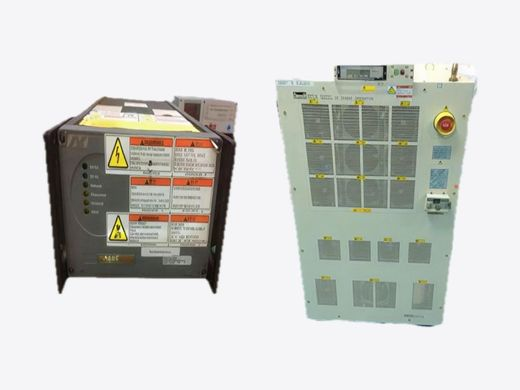
電源・RF2,201 件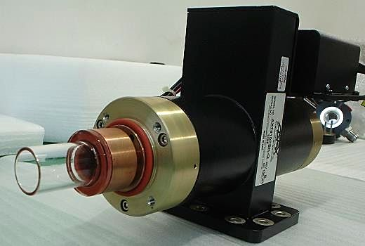
プラズマ源・オゾン214 件静電チャック・ヒーター455 件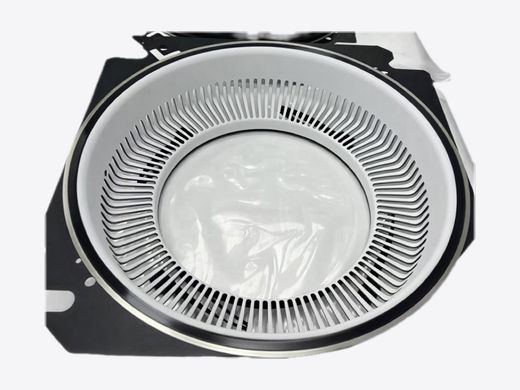
チャンバー・プロセス部品605 件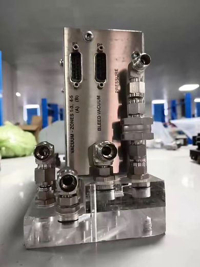
CMP部品365 件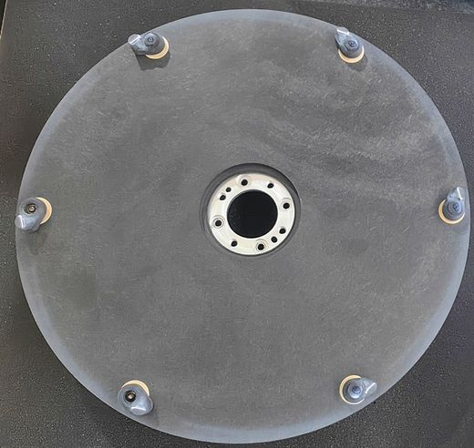
ウェット・洗浄部品115 件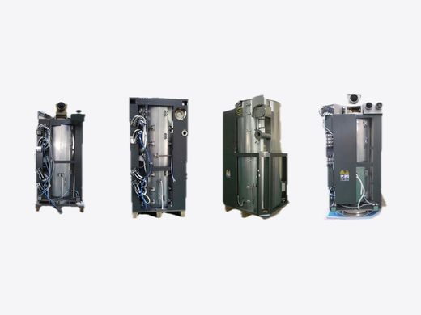
炉・拡散・注入299 件露光ユニット・レーザー554 件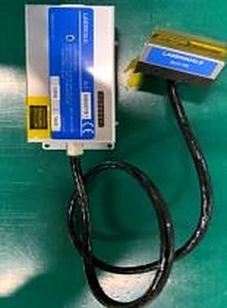
計測・検査装置ユニット211 件真空・流体・温調
搬送・駆動・制御
対応領域
01CMP 装置・部品 装置サービス・コア部品修理・消耗品・装置改造02エッチ・ウェット・炉 AMAT · LAM · Mattson · TEL · Kokusai03露光・塗布現像・計測 ASML · Nikon · Canon · TEL · Hitachi04ESC・CVD ヒーター 300mm エッチ・注入・HDPCVD05真空・チラー ポンプ・バルブ・チラー06シール・O リング FFKM · FKM07Si／SiC・金属・注入 OEM 品番対応の互換消耗品08エンプラ・ウェット部品 PBI・PVDF・スピンベース・シャワーヘッド09試験HW・カスタム装置 バーンイン・ロードボード・DUT・リークテスター
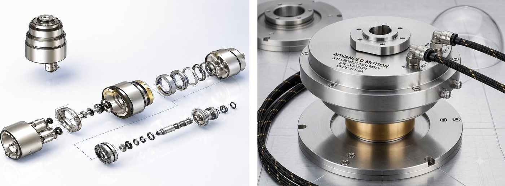
技術パートナー工場での CMP 修理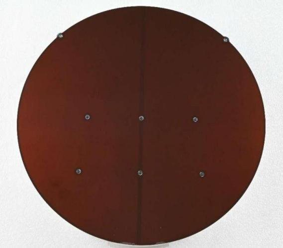
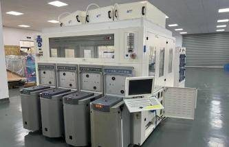
技術パートナー工場ASMLNikonCanonTELHitachi
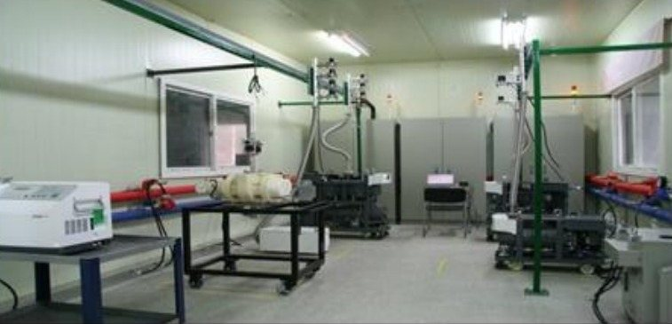
技術パートナー工場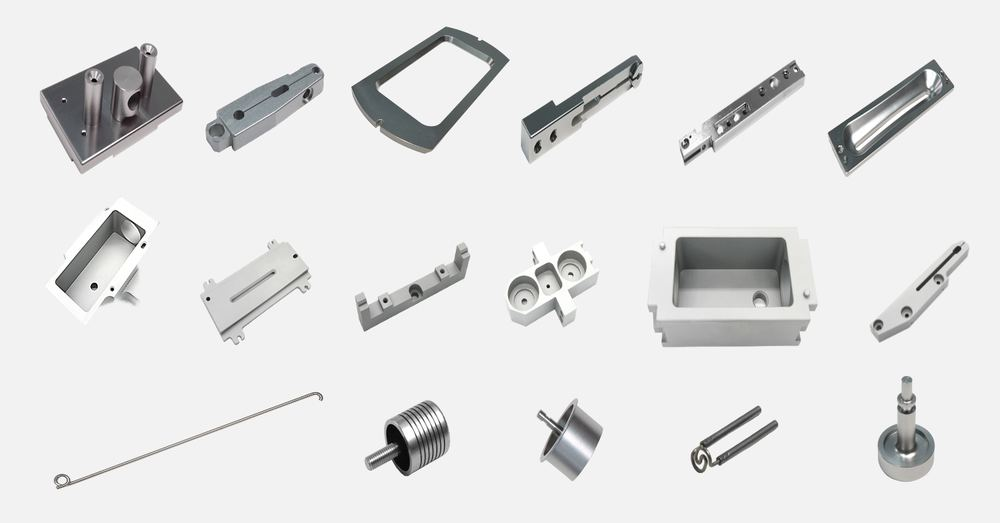
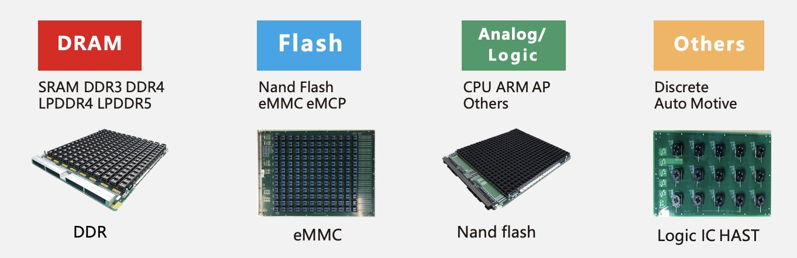
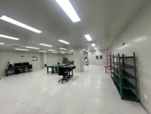
技術パートナー工場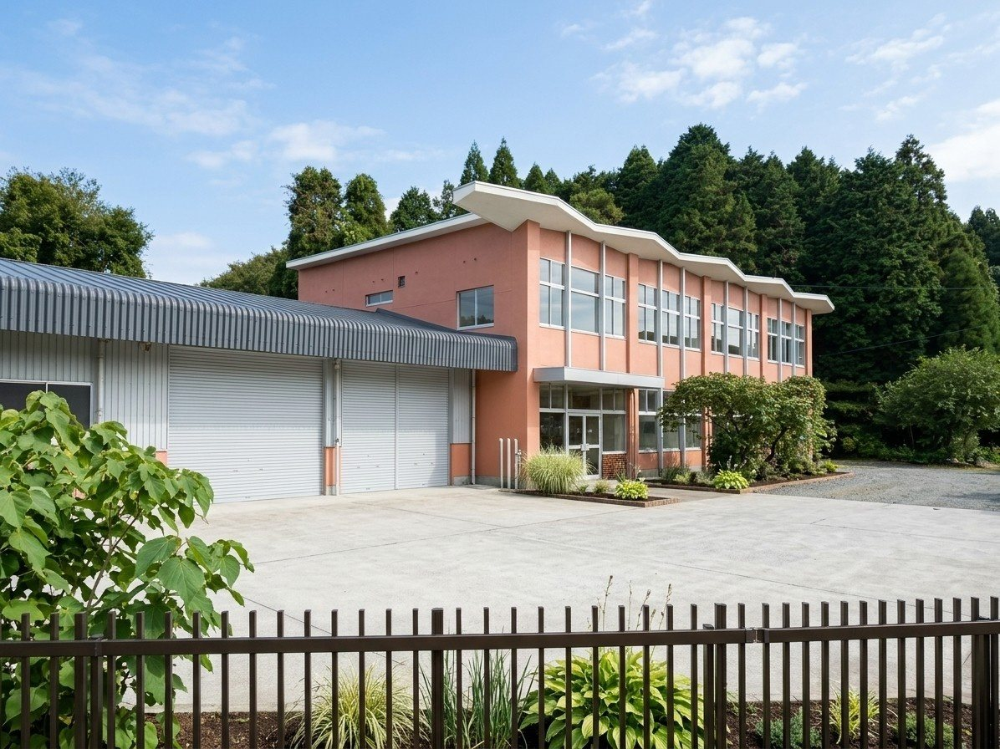
熊本工場（阿蘇）改修後イメージ（完成予想）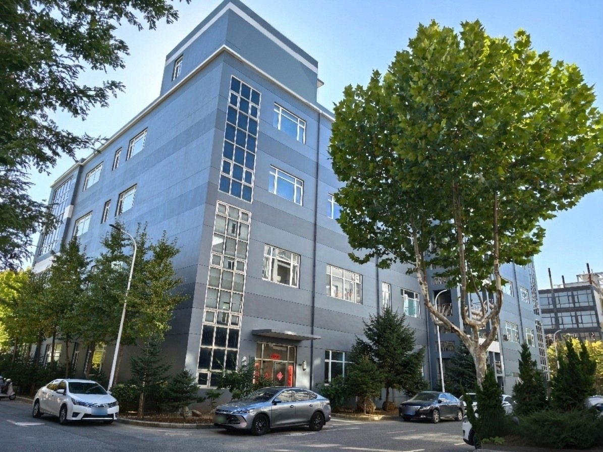
技術パートナーのオフィス棟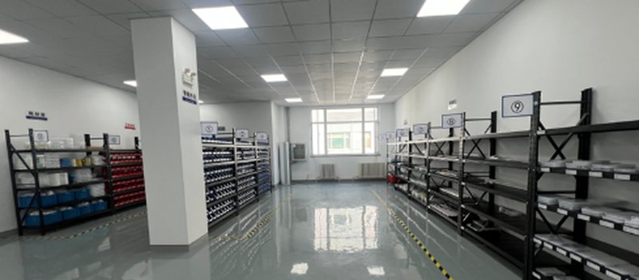
技術パートナー工場